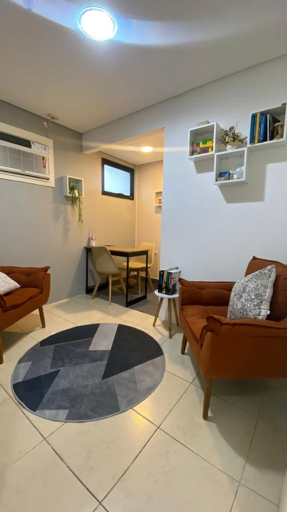
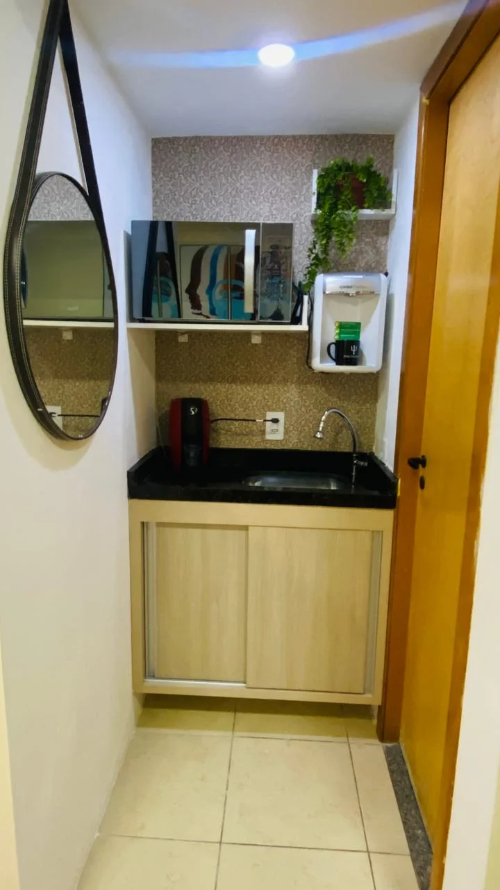
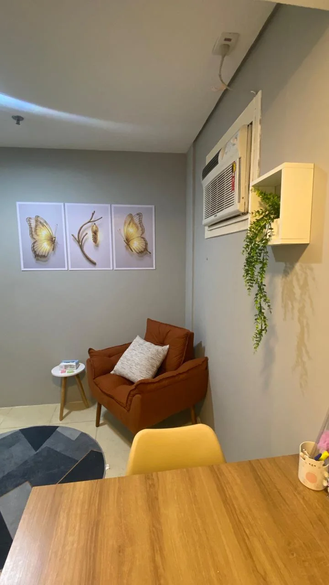
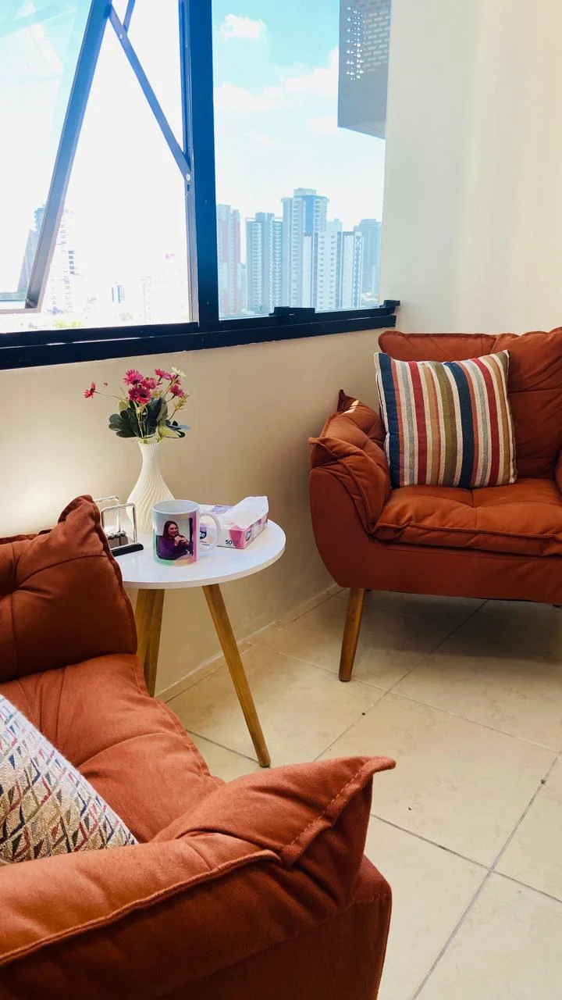
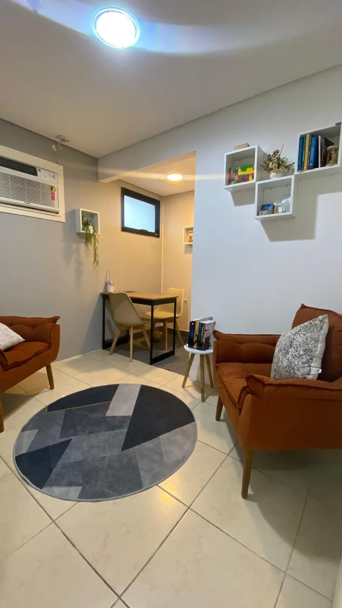
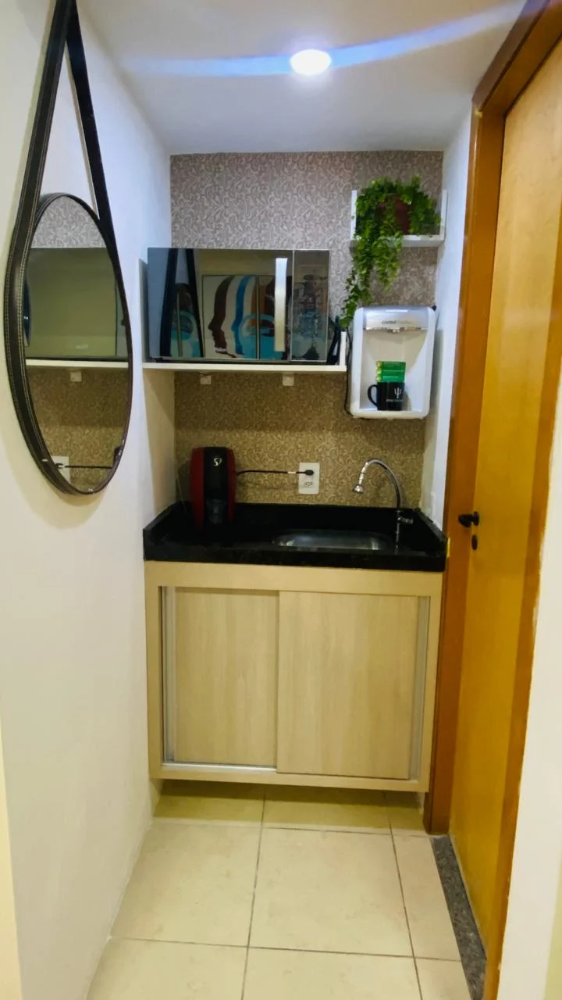
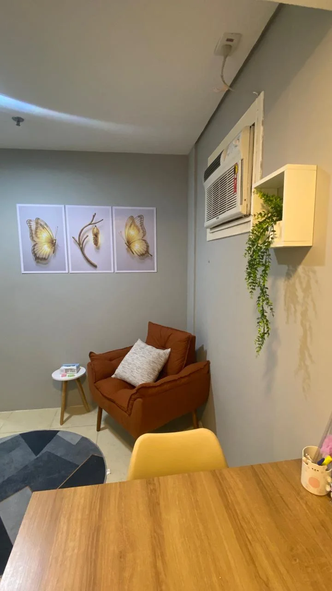
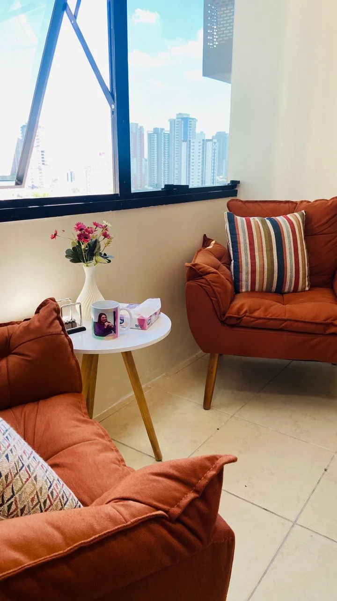

Quem Somos

Psi Katia Lopes – CRP 06/203495
Psicóloga formada pela FMU, com especialização em Terapia Cognitivo-Comportamental (TCC) pela CETCC e pós-graduação em Neuropsicologia. Possui trajetória interdisciplinar em Biologia e Recursos Humanos, com mais de oito anos de experiência no desenvolvimento e gestão de pessoas.
Atua no atendimento de adultos e adolescentes, com foco em autoconhecimento, equilíbrio emocional e fortalecimento da saúde mental, sempre guiada pela escuta empática, ética profissional e práticas baseadas em evidências.
Psi Dayse Monteiro – CRP 06/100793
Psicóloga com 16 anos de experiência clínica, atuando com crianças, adolescentes e adultos. Possui formação em Psicanálise e abordagem atual em Terapia Cognitivo-Comportamental (TCC), unindo autoconhecimento profundo e intervenções práticas.
Pós-graduada em Neuropsicologia pelo CETCC, realiza atendimentos e avaliações com foco em intervenções estratégicas, baseadas em evidências, buscando promover clareza, equilíbrio emocional e qualidade de vida.
 






